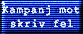

Deltag i KMSF -- Kampanjen Mot Skriv Fel -- genom att länka till den här sidan. Du kan också med fördel göra en egen sida om språkfel; vi länkar gärna in den.
Om du, som vi, finner det deprimerande att läsa det mesta som skrivs på s.k. svenska i dag, om du tycker att det inte kan vara så svårt att lära sig några enkla tumregler, om du är en besserwisser som gillar att slå ner folk i skorna eller om du helt enkelt är intresserad av ärans och hjältarnas språk är detta kampanjen för dig!
Kampanjen bytte nyligen namn eftersom det gamla namnet ("binde ords fel") var såväl mindre slående som ett terminologiskt missfoster. ("Bindeord" är konjunktioner och sådant. Tack till OVR för påpekandet.)
Kampanjen har några aktiva nordiska släktingar:
Återstoden av den här sidan är tills vidare mycket tråkigare och består av en referens för folk som faktiskt inte har lärt sig skriva svenska i skolan. Om du vill länka till den här sidan och på så vis hjälpa till att sprida vårt budskap, kopiera logo-giffen till din egen server och klistra in den med en länk:

Tack på förhand. Och ett stort tack till Daniel Wajander för logon!
Kommentarer, bidrag och önskemål kan skickas via svarsblanketten. (Beklagar det något besvärliga arrangemanget; det är försvar mot spammare och andra småkriminella.)
Särskrivning av ord är ett fenomen som redan är så vanligt att många inte märker felet. Antagligen har det här felet kommit från en ökad kontakt med engelskan, där man ju ofta särskriver ord som på svenska skall skrivas ihop.
Ironiskt nog sätter många nordbor in en massa bindestreck i engelsk text för att få det hela att se logiskt ut; "novel-writing-contest", "disk-cleaning-equipment", "high-score", "music-cassette" ...
En första enkel tumregel, som kan tolkas precis hur som helst: Uttryck som är en "logisk enhet" skrivs ihop: TV-apparat, äppelträd, sextonårsdag (eller 16-årsdag, märk bindestrecket!), trappuppgång.
Tycker du att de följande reglerna är för svåra, hoppa ner och glutta på rytmregeln.
Grundsatsen är att ett oböjt substantiv inte kan stå framför ett annat substantiv. Men det säger väl inte så mycket? Kanske du inte är tillräckligt van vid ordklasser för att känna igen ett oböjt substantiv medan du skriver. Den här regeln kräver en del träning innan den fastnar i ryggmärgen.
Substantiv är alltså "sakord"; ord som man kan sätta "en" eller "ett" eller "många" (eller ibland "mycket") före. Ett äpple, ett norrsken, en räkneapparat, ett tvivel, en lössläppthet, en grönska, en rädsla, en tveksamhet, en sanning.
Grundformen är just den form som du kan sätta "en" eller "ett" före. Kolla om du har förstått regeln med de här exemplen:
| en bok + den hyllan = bok hyllan | -- fel; det heter bokhyllan |
| en svamp + en skog = svamp skog | -- fel; det heter svampskog |
| en last + flera bilar = last bilar | -- fel; det heter lastbilar |
| en korv + den soppan = korv soppan | -- fel; det heter korvsoppan |
När allt kommer omkring är det emellertid inte så många sammansatta ord som är så här lätta att kontrollera.
Du kommer säkert svagt ihåg någonting om detta från skolgrammatiken; en massa svammel om vilka ord som är bestämningar till vilka ord, pilar hit och dit och så vidare.
Bestämningar är små beskrivande ord som ger närmare information om satsens huvudord. De brukar vara uppradade efter varandra före huvudordet, om de finns.
Om alla bestämningar berättar någonting mera om samma ord borde det inte vara så stor skillnad i vilken ordning de är uppradade, eller hur? En smutsig, trött och sliten man är precis samma sak som en sliten, smutsig och trött man. (Inte alltid -- se nedan.)
Därmed kan du prova om två ord skall skrivas ihop helt enkelt genom att försöka skjuta in ett litet extra ord mellan dem. Såhär:
| ett äppel stort träd | -- fel! Måste vara stort äppelträd |
| ett X Files dåligt avsnitt | -- fel! Måste vara dåligt X Files-avsnitt |
| ett telefon sjusiffrigt nummer | -- fel! Måste vara sjusiffrigt telefonnummer |
| ett Hayes snabbt modem | -- fel! Måste vara snabbt Hayes-modem |
| en TV hög antenn | -- fel! Måste vara hög TV-antenn |
| en kassa billig apparat | -- fel! Måste vara billig kassaapparat (eller kass billig apparat -- en klassiker!) |
Om du undrar om "äppelträd" skall skrivas ihop eller inte kan du alltså fundera på hur det heter om trädet är stort, och så vidare.
Ibland när man byter ordning bland bestämningarna kan hela uttryckets betydelse förändras (trots vad som sades ovan). En "slö jävla fock" är inte samma sak som en "jävla slö fock". Märk att båda dessa uttryck måste handla om segel. En "slöfock" skrivs alltid ihop.
När det gäller verb kommer bestämningarna efter i stället för före. Då är det inte längre lika lätt, därför att en del verb är delar av idiomatiska uttryck (som vi för enkelhetens skull kan översätta med "stående uttryck"). "Att boota om" är ett exempel, "att flytta framåt" är ett annat. Om du är väldigt osäker kan du försöka experimentera med en substantiverad form: "en ombootning", "en framåtflyttning".
Det finns någonting som heter kongruensböjning i svenskan. Det är kanske lättare att ge exempel än att förklara:
Skulle vi inte ha kongruensböjning skulle det heta
| de liten grön männen |
| vår kär fosterland |
| ett enorm ful fabrikskomplex |
Men det gör det ju inte. Vi säger "de små gröna männen", "vårt kära fosterland", "ett enormt fult fabrikskomplex".
Det här går att utnyttja när du är osäker på om ett ord skall skrivas ihop eller inte, därför att förleden i ett sammanskrivet ord inte böjs kongruent. Så här:
| den gamle slöfocken | -- inte den gamle slöe focken |
| den snabba vitsvanshjorten | -- inte den snabba vita svanshjorten |
| kommunens sjukkassa | -- inte kommunens sjuka kassa |
| en klentrogen kvinna | -- inte en klent trogen kvinna eller en klen trogen kvinna (som ju betyder samma sak som en trogen klen kvinna) |
Precis som med äppelträdet tidigare kan du för dig själv försöka lägga till en bestämning och se om den skall böjas kongruent eller inte. Tyvärr fungerar detta inte alltid -- alla ord är ju inte bestämningar. (Men för dem som det här med sammanskrivning är självklart borde också "last bil" böjas kongruent -- "den lasta bilen"!)
Märk också hur du uttalar orden olika beroende på hur de är skrivna: "SLÖfocken" men "slöe FOCken", "VITsvanshjorten" men "vita SVANShjorten" (vilket ord!), "SJUKkassa" men "sjuka KASsa".
Det är utan tvekan just genom rytmen som det är "självklart" för en del skribenter hur det skall vara.
Träna på det här, tänk dig hur du uttalar de olika exemplen här ovanför beroende på vad de betyder och hur de sitter ihop. Det är inte så svårt.
Problemet sär-/sammanskrivning har blivit så vanligt att en del språkvetare tycker att man borde tillåta felet; ändra på språket så att reglerna stämmer överens med hur språket används och inte tvärtom.
Vi håller inte med. Visserligen får och skall språket utvecklas, men särskrivning försvårar enligt vår mening läsligheten till den grad att missförstånd uppstår allt som oftast.
Kanske vi har fel? Engelsk text är ju för det mesta alldeles förståelig trots att engelsmännen skriver ihop ord mera sällan.
Men vi ger inte upp. Om språket får förändras hur som helst så har vi rätt att försöka ändra det tillbaka.
Per Ola Ingvarsson skickade in följande sjuka exempel som kan få tjäna som slutkläm:
en ljus hårig sjuk sköterskaVill vi faktiskt ha det så här? En sköterska som är ljus, hårig och sjuk?
Det finns givetvis många fler klassiska exempel. Som Åke Engsheden helt riktigt påpekar är nog kanske "herr toalett" i varje fall värt att få med här. (Skicka gärna fler förslag!)